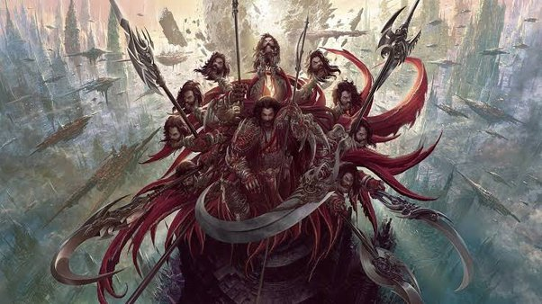

<link rel="stylesheet" href="../../../style.css">
<header>
  <h1>Indrajit</h1>
</header>
<main>
  <ol class="Asuras">
    <li>Name : Indrajit or Meghnath</li>
    <li>Yuga: Treta</li>
    <li>Defeated by: Lakshmana</li>
    <hr />
    <li>Illustrative image:</li>
    
    <p>
      Description: In ancient Hindu epic Ramayana, Indrajit has been described as great warrior. He was the son of
      Ravana, the King of Lanka. Indrajit means the conqueror of Indra (Hindu God). He is also known by the name of
      Meghanad
    </p>
    <p>
      Ravana, Indrajit played a major role. Before every battle Indrajit used to perform a Yagna, which made him
      invincible in battle. He succeeded in defeating Lakshmana twice and Lord Rama once in battle. But finally
      Lakshmana with the help of Vibhishana disrupted his Yagna and engaged in a battle with him for three days and
      three nights in which Indrajit was killed.
    </p>
    <p>
      Indrajit was born to Mandodari and Ravana. When he was born his birth cry sounded like a thunder due to which he
      was named Meghanada. In one of the incidents he managed to defeat the King of Devas, Indra. After this incident he
      came to be known as Indrajit, which means the conqueror of Indra.
    </p>
    <p>
      Shukra, the guru of the demons guided Indrajit towards possessing several divine celestial weapons such as
      Pashupatastra, Brahmastra and Vaishnavastra at a very young age. Indrajit had a wife named Sulochana, who was the
      daughter of Shesha Naga, the king of serpents.
    </p>
    <p>
      In a battle known as Devasura Sangram, Indrajit defeated Indra, tied him up and mounted him on his celestial
      chariot. But soon Lord Brahma intervened and asked Indrajit to release him. Indrajit obliged to this and was asked
      by Brahma to wish for any boon.
    </p>
    <p>
      As the Valmiki Ramayana quotes, upon his Yagna being destroyed by the armies of Lakshmana, Indrajit became enraged
      and stormed out of the Temple Cave. Seeing his uncle Vibhishana (who had abandoned Ravana and joined Rama) at
      Lakshmana's side multiplied Indrajit's fury manifold. He vowed to kill his uncle Vibhisana along with Lakshmana
      once and for all, letting loose the Yama-astra which he had been conserving for punishing Vibhishana's perceived
      treason
    </p>
  </ol>
</main>